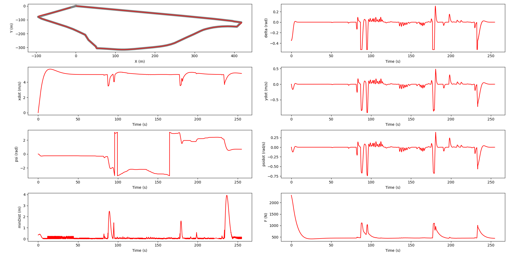

Robot Dynamics & Analysis · Modern Control Theory · Optimal Control & Reinforcement Learning
This page covers three graduate courses forming the core of my controls and robotics foundation at CMU. Robot Dynamics & Analysis (RDA) developed rigorous mathematical tools: screw theory, SE(3), product of exponentials, Jacobians, and constrained dynamics, applied to multi-DOF manipulators. Modern Control Theory (MCT) moved from theory to simulation, implementing PID, LQR, A* planning, and EKF SLAM in Webots across five progressive projects. Optimal Control & Reinforcement Learning (OCRL) closed the loop with trajectory optimization (iLQR) and neural network policies applied to a Two-Wheeled Inverted Pendulum — documented in depth on the TWIP project page.
RDA builds the mathematical machinery for rigid body motion — from a single joint to a 6-DOF manipulator — working in SE(3) and screw theory rather than Euler angles.
Implemented twist2rbvel, rbvel2twist, tform2adjoint, and skew-symmetric conversions from scratch. Forward kinematics via matrix exponentials expm(ξ̂·θ).
Product-of-exponentials FK for a PUMA-style arm. Spatial Jacobian computed via direct differentiation and Adjoint method — verified to agree symbolically.
Derived spatial and body Jacobians. Identified singularities at θ₂ = 0° (fully extended) and θ₂ = 180° (fully folded) where the Jacobian loses rank.
Constructed grasp map for a 2-contact planar grasp with Coulomb friction. Verified form closure by checking rank of reduced grasp map. Analyzed null-space internal force modes.
Solved the block-structured contact dynamics system for joint accelerations and contact forces under sticking vs. sliding assumptions.
MCT applied state-space control, planning, and estimation in Webots, a 3D robot simulation environment across five progressive projects. Each project built on the previous, from basic PID control to full SLAM.
Implemented longitudinal PID speed control (target: 5.0 m/s) with rolling resistance feedforward (F_roll = 0.019·m·g). Lateral control via pure pursuit steering toward a look-ahead point 40 waypoints ahead on the reference path.
Vehicle parameters: m=1,888.6 kg, Iz=25,854 kg·m², lf=1.55 m, lr=1.39 m (bicycle model approximation).
Generated optimal vehicle trajectories for constrained maneuvers (lane change and parallel parking) using polynomial trajectory planning with boundary conditions on position, velocity, and acceleration at initial and final states.
Compared greedy vs. optimal controllers, the optimal approach satisfied comfort constraints (bounded jerk) that the reactive controller violated.
Implemented A* on a 2D occupancy grid (0.05 m resolution) to find minimum-cost collision-free waypoints. An LQR controller then tracked the planned path in closed-loop, rejecting disturbances and maintaining stability along the full trajectory.
Demonstrated clean separation of planning (global, offline) from control (local, online).
Implemented full Extended Kalman Filter SLAM. State vector augmented to include robot pose [X, Y, ψ] and 2D landmark positions [xL,1, yL,1, …, xL,n, yL,n], totaling (3+2n) states.
Nonlinear motion model f(x,u) and measurement model h(x) linearized via Jacobians at each timestep. Landmark association performed by nearest-neighbor gating.

OCRL covered nonlinear trajectory optimization and neural network policy learning, applied progressively to a Two-Wheeled Inverted Pendulum (TWIP).
Designed LQR gains for the TWIP linearized about the upright equilibrium. Kalman filter estimated state under sensor noise (σ²_θ = 0.5 rad²) — converges to truth within ~2 s.
Nonlinear trajectory optimization via iterative LQR. Drag-race: TWIP reaches φ* = 2π rad in ~3.0 s, converging in 7 backward-forward pass iterations.
Small feedforward policy (4→2→1, 13 params) trained to balance the TWIP — fine-tuned to 42 ms balance time, 7× longer than linear gains alone.
Neural network surrogate for the 4D Rosenbrock function. Policy gradient methods (REINFORCE) studied for sample efficiency vs. asymptotic performance tradeoffs.